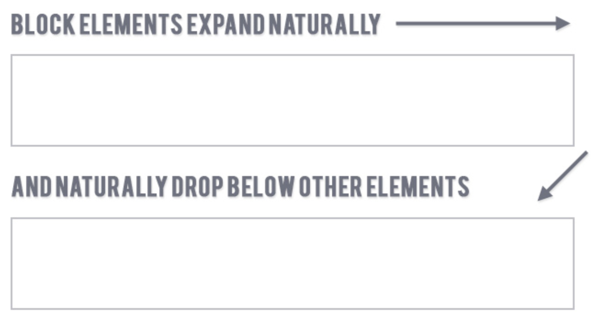
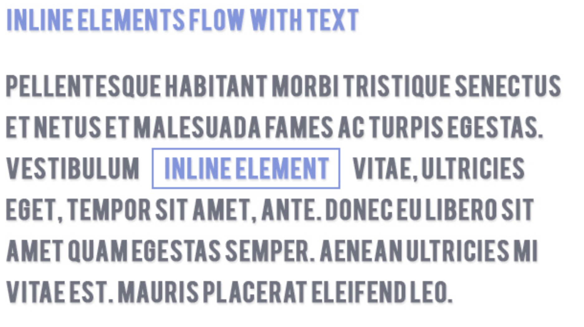

HTML/CSS Layout
Agenda
• The display Property: block vs. inline
• <span> and <div>
• Centering block and inline elements
• The Box Model
The Display Property: Block vs. Inline
CSS - The Display Property
• All HTML elements are either:
⇒ block
⇒ inline
⇒ inline-block (will be discussed later)
• Controlled by the CSS display property:
⇒ display: block;
⇒ display: inline;
⇒ display: inline-block;
CSS - Block Elements
• Take up 100% of the width of their parent
• Can have margin and padding assigned
• Can set height and width
• Placed below previous elements in the markup; break to a new line
CSS - Block Elements

CSS - Block Elements
• Examples of block elements:
⇒ <h1> thru <h6>
⇒ <p>
⇒ <ul>
⇒ <li>
CSS - Inline Elements
• Only take up the width of their content
• Can have any padding (top, left, bottom, right) assigned
• Can only have left and right margin assigned
• CANNOT set height and width
• Do not send elements to the next line
CSS - Inline Elements

CSS - Inline Elements
• Examples of inline elements:
⇒ <a>
⇒ <strong>
⇒ <em>
CSS - The Display Property
Easiest way to explore the display property is to tinker with the background-color of various elements:
<div> and <span>
<div> and <span> - Basics
• <div> is a generic block element
• <span> is a generic inline element
• THEY PROVIDE NO INHERENT MEANING
• Provide structure for styling other elements that they wrap
<div>
• <div> is the most basic building block in HTML
• Used to organize tags into blocks of content
• Think of as a container or wrapper element to hold groups of related elements
• We use it for layout, EVERYWHERE
<span>
• <span> is used to group inline elements and text:
Here is some text inside a span tag!
• Does not provide any styling
A note on centering...
Centering Block and Inline Elements
Center inline elements by setting:
text-align: center
on its parent
Center block elements by setting:
⇒ 1) a width on the element
⇒ 2) margin: 0 auto;
The Box Model
CSS - The Box Model
• Every HTML element is a box
• The layout of each box is a combination of the object's:
⇒ content
⇒ padding
⇒ border
⇒ margin
CSS - The Box Model

CSS - The Box Model - Content
Content:
⇒ The text and images that are within the element <tags>
CSS - The Box Model - Padding
Padding:
⇒ The space between the content and the border of the element.

CSS - The Box Model - Border
Border:
⇒ The border around the element.
CSS - The Box Model - Margin
Margin:
⇒ The space between the border and the other objects on the page.
CSS - The Box Model
CSS - The Box Model - Padding
p {
padding-top: 5px;
padding-bottom: 5px;
padding-right: 5px;
padding-left: 5px
}
p {
padding: 5px 5px 5px 5px;
/* starts at top, moves clockwise */
}
p {
padding: 5px 5px;
/* padding: (top/bottom) (left/right) */
}
p {
padding: 5px;
}
CSS - The Box Model - Borders
• Borders consist of three properties:
⇒ border-width: a px value for width
⇒ border-style: the style (solid, dotted, dashed, double)
⇒ border-color: the color
p {
border: 2px solid black;
}
p {
border: rgb(255, 0, 0) 2px dashed;
}
CSS - The Box Model - Margin
p {
margin-top: 5px;
margin-bottom: 5px;
margin-right: 5px;
margin-left: 5px
}
p {
margin: 5px 5px 5px 5px;
/* starts at top, moves clockwise */
}
p {
margin: 5px 5px;
/* margin: (top/bottom) (left/right) */
}
p {
margin: 5px;
}
Box Model: Exercise